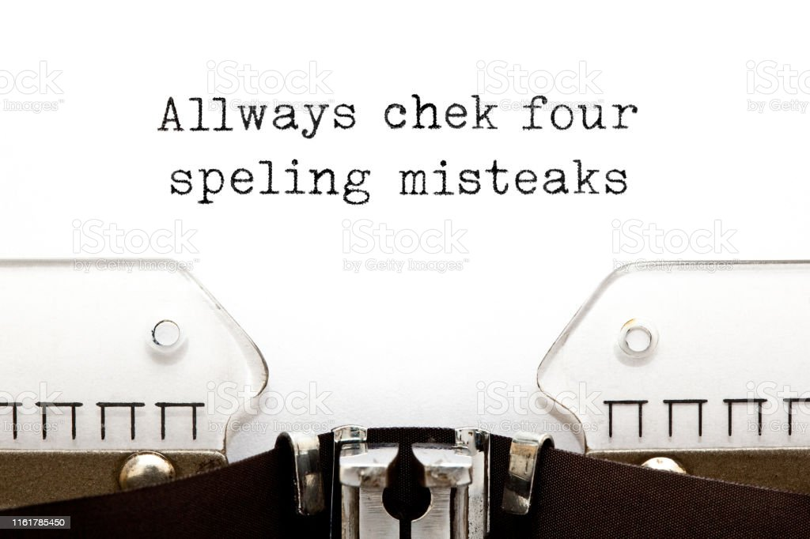

Alix Traver
Principal
Your writing makes
a distinct impression.
Wr!teRight will
help to make your impression a good one!

Wr!teRight is a proofreading and editing service that will greatly improve the quality of your writing.
We offer services for many different forms of writing and can even write full documents for your business, such as important announcements and notifications to your clients.
Our goal is to make your writing the best it can be to put your "best foot forward".
Our Services
Letter Writing
- Discuss objective and desired outcome
- Collect details and appropriate documents
- Identify possible addressees and contact information
- Draft letter for client’s review
- Send finalized letter to client
Proofreading & Editing
- Read text especially focusing on punctuation, grammar, and spelling
- Track suggested changes for client’s review if requested or correct without tracking
- Add comments for client’s review
- Identify and correct areas that need consistency
- Note readability and clarity issues in comments
- Fact check as needed
- Provide draft file for client’s review
- Send finalized version to client
Resume & Bio Development
- Discuss objective, desired outcome, and expected use
- Review present resume and/or biography
- Collect additional details from client
- Create a draft resume and/or bio for client’s review
- Provide final version to client
We can help with...
Biographies
Emails
Essays
Letters
Manuals
Manuscripts
Novels
Press releases
Resumes
Marketing material
Websites
Reports
Term papers
Theses
White papers
Testimonials
Alix, you are really, really good at what you do!
You are making me look like a brilliant writer.
—Douglas R. Pricer,
Author, The
Strength of a Giant--The Story of Max Steineke
We asked Alix to help us write a letter regarding a service complaint. She pulled together all the facts, researched the company information to find the appropriate contact, and wrote a clear and concise letter outlining the entire situation. We heard back from the company almost immediately and were satisfied and pleased with their reply and solution.
—Preston and Cindy Zeigler
Alix: Thank you for helping me create my professional resume and website bio.
—Scott M. Eide, Acupuncturist, Simple
Health Wellness
Pricing
Fees will depend on the length of the document, the services needed, and the expected turnaround time.
Specific fees are based on the following:
- the number of words, e.g., a book manuscript or a thesis
- or on the single project, e.g., a letter or resume
The fee will be clearly identified once the scope of the project is determined.
About Alix
Alix Epley Traver has been involved with writing and editing for her entire life. She was
born into a family of journalists and authors where correct grammar, punctuation, and spelling were not only
emphasized but often debated. Her first editing experience was in sixth grade as the editor of Petite Press,
a student government newsletter.
Throughout her career in various organizations and positions, she has written letters for
executives, served as the editor of many office and district newsletters, oversaw the development of both
hardcopy and digital newsletters distributed to more than 5ooo readers, created e-blasts, took minutes for
meetings, developed training manuals, and taught managers to write effective performance appraisals and
termination reports. Wherever she worked, she became the go-to person for proofreading just about everything
and anything.
Outside her work, she also edited booster club newsletters, assisted people in the writing
letters of complaint or commendation, helped write bios and resumes, and proofread college papers, reports,
and business communications for not just friends and family but others who valued her expertise.
Alix has a BA in English from Long Beach State University and an MBA from University of
Phoenix.
Contact me for help!
Alix Traver
Principal